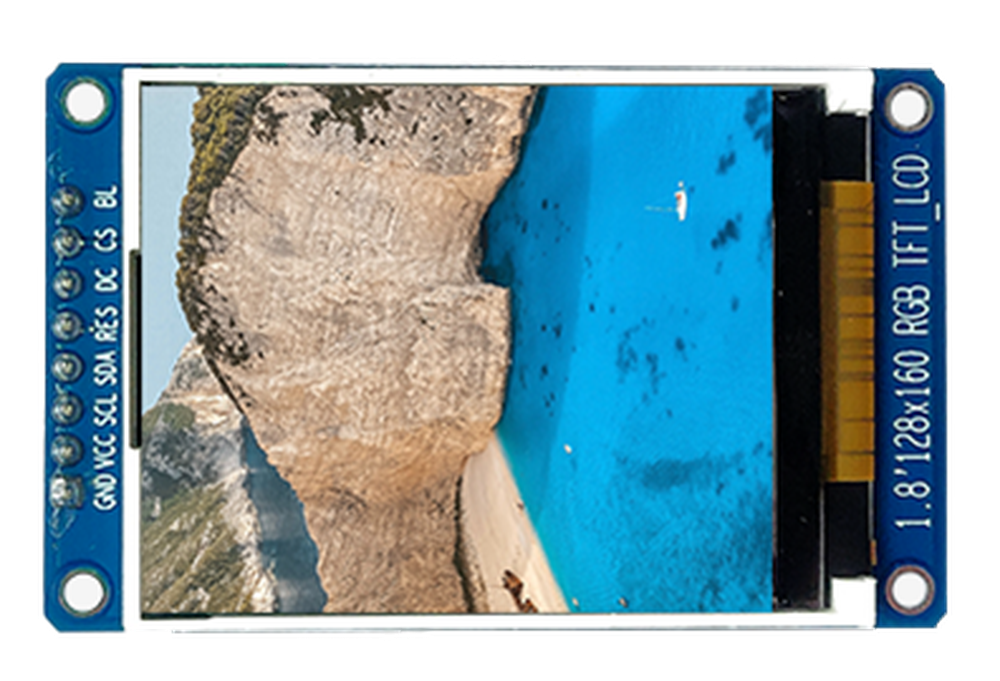

第一章——SPI通信原理
1. SPI引脚介绍
下面是典型的单主从机模式的SPI示意图：

- MOSI(Master In Slave Out)——用于主机向从机发送数据。
- MISO(Master In Slave Out)——用于从机向主机发送数据。
- SCK(Serial Clock)——用于同步主从机的时钟频率。
- CS(Chip Select)——也称SS(Slave Select)，用于主机选择需要通信的从机。
2. CPOL和CPHA
前面讲到，SPI的通信协议有着灵活的变种，这个变化主要是在时钟线上。即CPOL(Clock Polarity)和CPHA(Clock Phase)，也就是时钟极性和时钟相位。
CPOL简单来说，就是时钟是在高电平时空闲还是在低电平时空闲。如果CPOL＝0，则先出现上升沿，再出现下降沿；如果CPOL＝1，先出现下降沿，再出现上升沿。大部分设备CPOL＝0。
CPHA简单来说，就是数据是否在时钟信号的上升沿或下降沿移入或移出。如果CPHA=0，MOSI和MISO在时钟线的上升沿读取数据，下降沿改变数据；如果CPHA=1，MOSI和MISO在时钟线的下降沿读取数据，上升沿改变数据。大部分设备CPHA＝0。
根据CPOL和CPHA的不同，SPI通信可以分为以下四类：

通常情况下，SPI的通信模式为模式0。
3. SPI的通信过程
SPI虽然不像UART那样，没有开始位和结束位；但是和I2C相似，有开始信号和结束信号。
开始信号，主机拉低CS，表示通信开始。
结束信号，主机拉高CS，表示通信结束。
一般在通信过程中，MOSI和MISO可以不间断地传输数据，在这之间没有校验信息，通常都是高位在前，低位在后。
下面是模式0的SPI通信时域图：

4. SPI的优缺点
SPI通信的优点：
- 没有开始位和结束位，可以连续发送数据
- 没有复杂的设备地址，取而代之的是CS
- MOSI和MISO可以让设备同时收发送数据
- 传输速度快，正常都可以达到10MHz甚至更高
SPI通信的缺点：
- 四根线，有的设备还有D/C线，RST线等，接线相对复杂
- 无ACK验证信息是否传输成功
- 无校验信息
- 只能有一个主机
5. Arduino的SPI库
Arduino的官方SPI库是SPI.h，Arduino Uno只有一个SPI接口，即MOSI—D11，MISO—D12，SCK—D13，CS—D10，你可以使用任何GPIO作为CS，不一定是D10。
下面我们对SPI库部分重要的函数做简单讲解。
5.1 begin()
语法：
SPI.begin();
用于初始化SPI。默认使用SPI模式0，4MHz时钟频率，拉高CS，拉低SCK和MOSI。
5.2 setsetClockDivider()
语法：
SPI.setClockDivider(divider);
用来配置SPI的时钟频率，可选参数有：
- SPI_CLOCK_DIV2
- SPI_CLOCK_DIV4(Default speed)
- SPI_CLOCK_DIV6
- SPI_CLOCK_DIV8
- SPI_CLOCK_DIV16
- SPI_CLOCK_DIV32
- SPI_CLOCK_DIV64
- SPI_CLOCK_DIV128
5.3 setBitOrder()
语法：
SPI.setBitOrder(order);
用来配置SPI的数据发送顺序，可选参数有：
- LSBFIRST
- MSBFIRST
5.4 setDataMode()
语法：
SPI.setDataMode(mode);
用来配置SPI的模式，可选参数有：
- SPI_MODE0
- SPI_MODE1
- SPI_MODE2
- SPI_MODE3
5.5 beginTransaction()
语法：
SPI.beginTransaction(mySettings);
用于配置更加详细的SPI参数，参数为SPISettings，建议不要同时使用SPI.beginTransaction(mySettings)和SPI.setClockDivider等，使用一个配置即可。
5.6 SPISettings
语法：
SPISettings mySettting(speedMaximum, dataOrder, dataMode);
参数speedMaximum：用于设置SPI时钟频率，默认为4MHz，一般这个参数要小于单片机的时钟频率，Uno板可以达到14MHz。
参数dataOrder：用于设置传输数据时，是低位在前还是高位在前，默认是高位在前。可选值有MSBFIRST 和LSBFIRST。
参数dataMode：用于设置SPI的通信模式，模式为前面介绍的4种模式，默认为模式0。可选值有SPI_MODE0，SPI_MODE1，SPI_MODE2和SPI_MODE3。
一般设置为：
SPI.beginTransaction(SPISettings(14000000, MSBFIRST, SPI_MODE0));
5.7 endTransaction()
语法：
SPI.endTransaction();
放在SPI.beginTransaction(mySettings)，用于结束SPI通信。
5.8 transfer(), transfer16()
语法：
uint8_t receivedVal = SPI.transfer(val);
uint16_t receivedVal16 = SPI.transfer16(val16);
SPI.transfer(buffer, size);
用于发送和接收数据。参数和返回值的数据类型可以是uint8_t 或者uint16_t，也可以发送一个数据类型为uint8_t 的数组。
下面是一个使用SPI.setClockDivider的示例代码：
#include <SPI.h>
#define CS 10
void setup() {
pinMode(CS, OUTPUT);
SPI.begin();
SPI.setClockDivider(SPI_CLOCK_DIV2);
// transfer data 128
digitalWrite(CS, LOW);
SPI.transfer(128);
digitalWrite(CS, HIGH);
}
void loop() {
}
下面是一个使用SPISettings的示例代码：
#include <SPI.h>
// using two incompatible SPI devices, A and B. Incompatible means that they
// need different SPI_MODE
const int slaveAPin = 20;
const int slaveBPin = 21;
uint8_t stat, val1, val2, result;
// set up the speed, data order and data mode
SPISettings settingsA(2000000, MSBFIRST, SPI_MODE1);
SPISettings settingsB(16000000, LSBFIRST, SPI_MODE3);
void setup() {
// set the Slave Select Pins as outputs:
pinMode(slaveAPin, OUTPUT);
pinMode(slaveBPin, OUTPUT);
// initialize SPI:
SPI.begin();
}
void loop() {
// read three bytes from device A
SPI.beginTransaction(settingsA);
digitalWrite(slaveAPin, LOW);
// reading only, so data sent does not matter
stat = SPI.transfer(0);
val1 = SPI.transfer(0);
val2 = SPI.transfer(0);
digitalWrite(slaveAPin, HIGH);
SPI.endTransaction();
// if stat is 1 or 2, send val1 or val2 else zero
if (stat == 1) {
result = val1;
} else if (stat == 2) {
result = val2;
} else {
result = 0;
}
// send result to device B
SPI.beginTransaction(settingsB);
digitalWrite(slaveBPin, LOW);
SPI.transfer(result);
digitalWrite(slaveBPin, HIGH);
SPI.endTransaction();
}
6. 适用于哪些设备
常见的使用SPI的设备有以下几个：
| SD Card Module | RFID Module | ST7735 TFT Display |
|---|---|---|
 |  |  |
下一个章节我们将详细学习如何通过SPI向MPU9250读写数据。